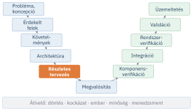
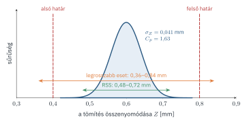
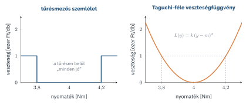
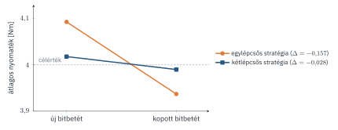
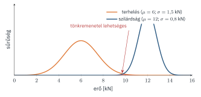

A fejezet feldolgozása után képes leszel:
- érzékenységvizsgálattal azonosítani a rendszer teljesítményét leginkább befolyásoló paramétereket;
- tűrésláncot számítani legrosszabb eset, négyzetes összegzés (RSS) és Monte Carlo-szimuláció alapján, és megítélni a módszerek feltevéseit;
- elmagyarázni a Taguchi-féle minőségi veszteségfüggvényt, és kiszámítani a várható veszteséget;
- teljes faktoros kísérletet tervezni és kiértékelni, főhatásokat és kölcsönhatásokat értelmezni;
- megkülönböztetni a tervezési és a zajtényezőket, és kölcsönhatásuk kihasználásával robusztus beállítást választani;
- terhelés–szilárdság interferenciával megbízhatóságot becsülni, és összevetni a biztonsági tényező szemléletével.
A korábbi fejezetek a meghibásodással foglalkoztak: mi romolhat el, milyen valószínűséggel, és mi a következménye. A minőségi problémák nagy része azonban nem meghibásodásból, hanem szórásból fakad: az alkatrészek méretei, az anyagjellemzők, a környezeti feltételek és a használat módja ingadozik, és a rendszer teljesítménye ezzel együtt ingadozik. A robusztus tervezés célja olyan rendszer, amelynek teljesítménye a lehető legkevésbé érzékeny ezekre az ingadozásokra. A fejezet a robusztus tervezés legfontosabb eszközeit mutatja be: az érzékenységvizsgálatot, a méretezést és a tűrésláncot, a minőségi veszteségfüggvényt, a kísérlettervezést és a valószínűségi tervezést (Phadke 1989; Taguchi, Chowdhury, és Wu 2005; Goldberg és mtsai. 1994, 4. fejezet).
A fejezet négy kérdésre épül:
- Melyik paraméter számít igazán?
- Hogyan halmozódnak az alkatrészek tűrései az összeállításban?
- Mennyibe kerül az eltérés a célértéktől, és hogyan csökkenthető a szórás érzékenysége?
- Hogyan becsülhető a tönkremenetel valószínűsége a biztonsági tényező helyett?
18.1. Érzékenységvizsgálat
Az érzékenységvizsgálat (paraméteres elemzés) azt vizsgálja, hogyan változik a rendszer egy jellemzője, ha egy tervezési paraméter megváltozik (Saltelli és mtsai. 2008). Legegyszerűbb formája az egyparaméteres változtatás: a többi paramétert névleges értékén tartva egyet változtatunk, és figyeljük a kimenetet. A paraméterek összevetéséhez a relatív érzékenység (rugalmasság) a hasznos:
amely megmutatja, hogy a paraméter 1%-os változása hány százalékkal változtatja a kimenetet. A KoboCella soros ciklusideje ( s, 6. fejezet) például a nyolc csavar meghúzási idejétől , a kezelő idejétől rugalmassággal függ: a csavarozás 10%-os gyorsítása 4,4%-kal rövidíti a ciklust, a kezelő 10%-kal gyorsabb munkája csak 3,1%-kal. Az érzékenységvizsgálat ezzel megmutatja, hova érdemes a fejlesztési erőforrást összpontosítani; a döntéselemzésben a súlyok érzékenységét ugyanígy vizsgáltuk (10. fejezet).
Az egyparaméteres vizsgálat nem mutatja meg a paraméterek kölcsönhatását: két paraméter együttes változásának hatása eltérhet az egyenkénti hatások összegétől. Ezt a kísérlettervezés és a Monte Carlo-szimuláció tárja fel (lásd alább).
18.2. Méretezés és tűréslánc
Minden gyártott méret ingadozik, ezért a rajzon a névleges érték mellett a megengedett eltérést, a tűrést is meg kell adni. A méretezés és a tűrésmegadás szabályait (beleértve a geometriai tűréseket: alak, helyzet, irány) szabvány rögzíti (ASME 2018). Összeállításban az alkatrészek tűrései tűrésláncot alkotnak: egy funkcionálisan fontos méret (rés, átfedés, összenyomódás) több alkatrész méretének összegeként vagy különbségeként adódik. A tűrésláncot két klasszikus módon számolják (Chase és Parkinson 1991):
- Legrosszabb eset: az eredő tűrés a tagok tűréseinek összege, , ahol a tag érzékenysége (lineáris láncnál ). Garantálja, hogy minden összeállítás a határon belül marad, de sok tagnál nagyon szoros, drága alkatrésztűréseket követel.
- Statisztikus (négyzetes) összegzés (RSS): . Feltételezi, hogy a tagok egymástól függetlenek, normális eloszlásúak, a tűrésmező közepére szórnak, és a tűrés például -nak felel meg. Ekkor a szélső értékek együttes előfordulása nagyon valószínűtlen, és lazább alkatrésztűrések is elegendők.
Ha a feltevések nem teljesülnek (eltolt középérték, nem normális eloszlás, összefüggő tagok, nemlineáris lánc), a Monte Carlo-szimuláció ad megbízható eredményt: a tagokat a tényleges eloszlásukból mintázzuk, és az eredő méret eloszlását közvetlenül számoljuk (Chase és Parkinson 1991).
A fordított fedél hibamódja után (15. fejezet) a csapat a helyesen felhelyezett fedél tömítését is megvizsgálta. A tömítés akkor zár megbízhatóan, ha összenyomódása 0,40 és 0,80 mm között van. Az összenyomódás négy méretből adódik: a tömítés vastagsága ( mm, +), a fedél horonymélysége ( mm, −), a motorház tömítőperemének magassága ( mm, +) és a fedél síklapúsági eltérése ( mm, −). A névleges összenyomódás 0,60 mm.
A legrosszabb eset szerint az eredő tűrés mm, így az összenyomódás 0,36 és 0,84 mm között lehet: a követelmény nem teljesül. Az RSS szerint az eredő tűrés mm (0,48–0,72 mm), és ha a tűrések -nak felelnek meg, az összenyomódás szórása 0,041 mm, a folyamatképesség (18.1. ábra). A csapat a statisztikus méretezést fogadta el, mert napi mintegy 610 motornál a nagy darabszám indokolja, és a beszállítók folyamatképessége mérésekkel igazolható. Kikötötte viszont, hogy a tömítés vastagságát és a horonymélységet a beszállítók statisztikai folyamatszabályozással felügyeljék, mert a középérték eltolódása a statisztikus számítás legfontosabb feltevését rontaná. A Gyakorlati útmutató notebookja Monte Carlo-szimulációval azt is megmutatja, mekkora eltolódás fér bele a követelménybe.

18.3. A minőségi veszteségfüggvény
A hagyományos minőségszemlélet szerint a tűrésmezőn belüli termék jó, a kívüli rossz („kapufa-szemlélet”). Taguchi szerint azonban a célértéktől való minden eltérés veszteséget okoz a társadalomnak: a vevőnek, a gyártónak és a környezetnek, és ez a veszteség a célértéktől távolodva négyzetesen nő (Taguchi, Chowdhury, és Wu 2005) (18.2. ábra):
ahol a célérték, az a funkcionális eltérés, amelynél a termék már nem teljesíti a funkcióját, pedig az ekkor fellépő veszteség (javítás, csere, reklamáció). Egy középértékű, szórású folyamat darabonkénti várható vesztesége:
A képlet a robusztus tervezés két irányát mutatja: a középértéket a célértékre kell állítani, és a szórást kell csökkenteni. Mindkettő pénzben kifejezhető, így az intézkedések költsége összevethető a veszteségcsökkentéssel.

Ha például a KoboCella csavarkötésének nyomatéka Nm, és a tűréshatáron egy motor javítása 1000 Ft-ba kerül, akkor Ft/Nm². A Nm középértékű, Nm szórású folyamat várható vesztesége Ft darabonként, évi 140 000 motornál mintegy 10 MFt. Ha a szórás 0,03 Nm-re csökken, és a középérték a célértékre kerül, a veszteség 22,5 Ft-ra, évente 3,2 MFt-ra csökken, pedig a tűrésmezős szemlélet szerint mindkét folyamat „hibátlan” termékeket gyárt.
18.4. Kísérlettervezés
A kísérlettervezés (design of experiments, DoE) arra szolgál, hogy a lehető legkevesebb kísérlettel megtudjuk, mely tényezők és milyen kölcsönhatásaik befolyásolják a vizsgált jellemzőt (Montgomery 2017). A „egyszerre egy tényező” módszerrel szemben a faktoros kísérlet minden tényezőt egyszerre változtat, így kevesebb kísérletből több információt ad, és a kölcsönhatásokat is feltárja.
A teljes faktoros kísérletben tényező mindegyikét két szinten (kódolva és ) vizsgáljuk, minden kombinációban. Egy tényező főhatása a válasz átlaga a felső szinten mínusz az átlag az alsó szinten; két tényező kölcsönhatása azt mutatja, mennyiben függ az egyik hatása a másik szintjétől. Montgomery a kísérletezés három alapelvét emeli ki: a véletlen sorrendet (hogy az időben változó zavaró hatások ne torzítsák az eredményt), az ismétlést (a kísérleti hiba becslésére) és a blokkosítást (az ismert zavaró tényezők kiszűrésére) (Montgomery 2017). Sok tényezőnél a részfaktoros tervek a kombinációk egy jól választott részhalmazával dolgoznak, a magasabb rendű kölcsönhatások összemosása árán.
Taguchi paramétertervezése a kísérletezést a robusztusság szolgálatába állítja. Megkülönbözteti a tervezési tényezőket, amelyeket a tervező szabadon beállíthat, és a zajtényezőket, amelyek a gyártásban vagy a használatban ingadoznak, és nem, vagy csak drágán szabályozhatók (környezeti hőmérséklet, anyagingadozás, kopás). A cél olyan tervezési beállítás, amelynél a zajtényezők hatása a legkisebb, és ehhez éppen a tervezési és a zajtényezők közötti kölcsönhatást használja ki (Phadke 1989; Taguchi, Chowdhury, és Wu 2005). Taguchi a robusztusságot jel–zaj viszonnyal méri; Montgomery szerint ugyanez a cél általában hatékonyabban elérhető, ha a választ a tervezési és a zajtényezők függvényeként modellezzük, és a modellből választjuk ki a robusztus beállítást (Montgomery 2017).
A QFD-ből tudjuk (7. fejezet), hogy a nyomaték pontosságát a bitbetét kopása erősen befolyásolja. A csapat teljes faktoros kísérletet végzett két ismétléssel (16 csavarozás véletlen sorrendben). Tényezők: A a végső fordulatszám (alacsony, magas), B a csavarozási stratégia (egylépcsős, kétlépcsős: gyors előhúzás, majd lassú meghúzás), C a bitbetét állapota (új, kopott). Az A és a B tervezési tényező, a C zajtényező: a kopás a gyártásban elkerülhetetlen.
A főhatások: A Nm, C Nm, B elhanyagolható; a legnagyobb kölcsönhatás a B×C ( Nm). A kölcsönhatás a robusztusság kulcsa (18.3. ábra): egylépcsős stratégiánál a kopott bitbetét Nm-rel csökkenti a nyomatékot, kétlépcsősnél csak Nm-rel. A kétlépcsős stratégia tehát a zajtényezőre majdnem érzéketlen. A csapat ezt választotta, a fordulatszámmal pedig a középértéket állította a célértékre. A bitcsere-tervet (15. fejezet) megtartotta, de a cseréket ritkíthatta.

18.5. Valószínűségi tervezés
A hagyományos méretezés biztonsági tényezővel dolgozik: az alkatrész szilárdsága legyen a várható terhelés valahányszorosa. A biztonsági tényező azonban nem mondja meg, mekkora a tönkremenetel valószínűsége, mert sem a terhelés, sem a szilárdság szórását nem veszi figyelembe. A valószínűségi tervezés mindkettőt valószínűségi változóként kezeli, és a tönkremenetel valószínűségét az eloszlásaik átfedéséből (terhelés–szilárdság interferencia) számítja (O’Connor és Kleyner 2012; Goldberg és mtsai. 1994, 3.14. szakasz). Normális eloszlású, független terhelés () és szilárdság () esetén:
ahol a standard normális eloszlásfüggvény. A módszer a biztonsági tényezők gyakorlati alternatívája, de jelentős statisztikai tapasztalatot kíván. Eredménye erősen függ az eloszlások szélétől, ezért csak akkor megbízható, ha a felhasznált adatok a tervezett populációra érvényesek (O’Connor és Kleyner 2012).
A VárosiBringa dokkolójának reteszcsapja nyírószilárdságának várható értéke 12 kN, szórása 0,8 kN. A csapat a próbaüzem rángatási és vandalizmusadataiból a nagy terheléses események erejét 6 kN várható értékűnek és 1,5 kN szórásúnak becsülte. A biztonsági tényező 2, ami első ránézésre bőségesnek tűnik. Az interferenciaszámítás szerint (18.4. ábra) egy ilyen esemény szórásnyi távolságra van, a tönkremenetel valószínűsége eseményenként . Ha a 300 dokkolóhely mindegyikét évente 20 ilyen esemény éri, az évente átlagosan 1,25 tönkrement reteszcsapot jelent. A csapat a csap anyagának erősítése helyett a terhelés szórását csökkentette: a dokkoló bevezető íve a kerékpárt rángatáskor megtámasztja, így a csapra jutó erő csúcsai kisebbek lettek.

A tűrés, a veszteségfüggvény, a kísérlettervezés és az interferencia ugyanannak a gondolatnak a változatai: a tervezési döntéseket a bizonytalanság ismeretében kell meghozni, nem a névleges értékek alapján. Ugyanez a gondolat jelent meg a döntéselemzés Monte Carlo-vizsgálataiban (10. fejezet) és a megbízhatósági szimulációban (16. fejezet). A modellalapú fejlesztésben (3. fejezet) a rendszermodell paramétereihez eloszlás rendelhető, és a bizonytalanság a teljes modellen végigterjeszthető; a szimulációval kapott eloszlás mutatja meg, mekkora tartalékkal teljesülnek a követelmények.
Gyakori hiba, hogy a tervezés a névleges méretekkel és anyagjellemzőkkel számol, és a tűréseket a végén, a rajzkészítéskor, szokásértékekkel adja meg. Ilyenkor az összeállítás egy része nem működik, vagy a tűrések feleslegesen szigorúak és drágák. A funkcionálisan fontos méretláncokat már a részletes tervezés elején azonosítani kell, és a tűréseket a lánc elemzése alapján kell elosztani.
- Az érzékenységvizsgálat megmutatja, mely paraméterek befolyásolják leginkább a teljesítményt; a relatív érzékenység (rugalmasság) a paraméterek összevetésére alkalmas.
- A tűréslánc legrosszabb esetre számolva mindig biztonságos, de drága; az RSS-számítás függetlenséget, normális eloszlást és központosított folyamatot feltételez. A feltevések sérülésekor Monte Carlo-szimuláció kell.
- Taguchi veszteségfüggvénye szerint a célértéktől való minden eltérés veszteség; a várható veszteség a szórás és a középérték-eltérés négyzetével arányos.
- A faktoros kísérlet egyszerre változtatja a tényezőket, így a főhatások mellett a kölcsönhatásokat is feltárja; alapelvei a véletlen sorrend, az ismétlés és a blokkosítás.
- A robusztus tervezés a tervezési és a zajtényezők kölcsönhatását használja ki: olyan beállítást keres, amelynél a zaj hatása a legkisebb.
- A valószínűségi tervezés a terhelés és a szilárdság szórásából számítja a tönkremenetel valószínűségét; azonos biztonsági tényező mellett is nagyon különböző lehet a kockázat.
- Egy rendszer kimenete . Mekkora a relatív érzékenység és szerint?
- Egy háromtagú lineáris lánc tűrései , és mm. Mennyi az eredő tűrés legrosszabb esetre és RSS szerint?
- Milyen feltevésekre épül az RSS-számítás? Mi történik, ha egy tag középértéke a tűrésmező szélére tolódik?
- Egy jellemző célértéke 10, a funkcionális határ , a határon a veszteség 500 Ft. Mennyi a darabonkénti várható veszteség, ha és ?
- Mi a különbség a főhatás és a kölcsönhatás között? Miért nem tárja fel a kölcsönhatást az egyszerre egy tényezőt változtató kísérlet?
- Mi a tervezési és a zajtényező? Adj példát mindkettőre egy háztartási gépnél!
- Egy alkatrész szilárdsága , , a terhelés , (azonos egységben). Mennyi a biztonsági tényező, és mennyi a tönkremenetel valószínűsége?
- Miért mondhatjuk, hogy a biztonsági tényező önmagában nem jellemzi a kockázatot?
Megoldás
- , : 1%-os változása kétszer akkora relatív változást okoz.
- Legrosszabb eset: mm; RSS: mm.
- A tagok függetlenek, normális eloszlásúak, a tűrésmező közepére szórnak, és a tűrés ismert szórásnak (például ) felel meg. Ha egy tag középértéke eltolódik, az eredő méret középértéke is eltolódik, és a határon kívül eső összeállítások aránya jelentősen nőhet; ilyenkor Monte Carlo-szimuláció vagy az eltolódást figyelembe vevő számítás kell.
- ; Ft/db.
- A főhatás egy tényező átlagos hatása; a kölcsönhatás azt mutatja, hogy egy tényező hatása függ egy másik tényező szintjétől. Az egyszerre egy tényezőt változtató kísérlet a többi tényezőt egy rögzített szinten tartja, így nem látja, hogyan változna a hatás más szinteken.
- A tervezési tényezőt a tervező beállítja (például egy mosógép dobfordulatszáma vagy a programidő), a zajtényező ingadozik, és nem szabályozható (például a víz keménysége, a ruha mennyisége és anyaga, a hálózati feszültség).
- A biztonsági tényező ; ; a tönkremenetel valószínűsége .
- Mert ugyanaz a biztonsági tényező kis szórásnál elhanyagolható, nagy szórásnál jelentős tönkremeneteli valószínűséget jelenthet; a kockázatot a középértékek különbsége és a szórások együtt határozzák meg.
Saját fejlesztési feladatodhoz:
- végezz érzékenységvizsgálatot a legfontosabb teljesítményjellemzőre (MOP vagy TPM), és rangsorold a paramétereket relatív érzékenységük szerint;
- ha a rendszerben van funkcionálisan fontos méretlánc (rés, illesztés, összenyomódás), számítsd ki legrosszabb esetre, RSS szerint és Monte Carlo-szimulációval;
- tervezz egy legalább három tényezős faktoros kísérletet (tényezők, szintek, válasz, ismétlések, sorrend), és jelöld a tervezési és a zajtényezőket;
- használd a Gyakorlati útmutató tűréslánc- és kísérlettervezési eszközlapját.
- Montgomery (2017): a kísérlettervezés alapvető tankönyve, a robusztus tervezés válaszfelület-alapú megközelítésével.
- Taguchi, Chowdhury, és Wu (2005) és Phadke (1989): a Taguchi-módszer, a veszteségfüggvény és a paramétertervezés.
- Chase és Parkinson (1991): a tűrésanalízis módszereinek áttekintése.
- Saltelli és mtsai. (2008): az érzékenységvizsgálat módszereinek bevezető kézikönyve.
- Goldberg és mtsai. (1994), 3.14., 4.1–4.3., 7.5. és 7.13. szakasz: a valószínűségi tervezés, az érzékenységvizsgálat, a tűrések, a kísérlettervezés és a veszteségfüggvény gyakorlati leírása.